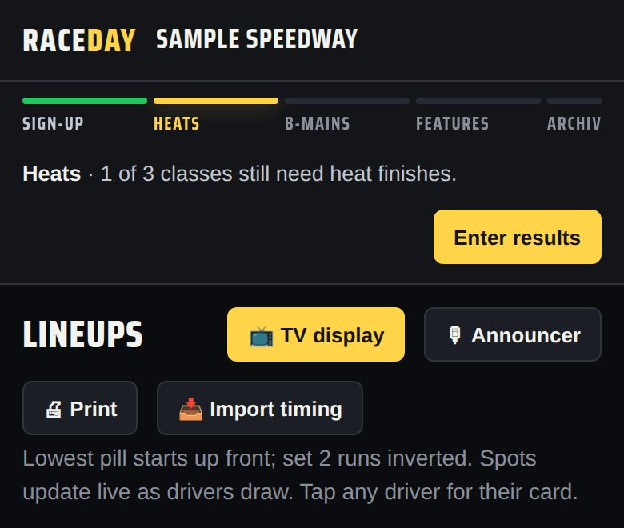
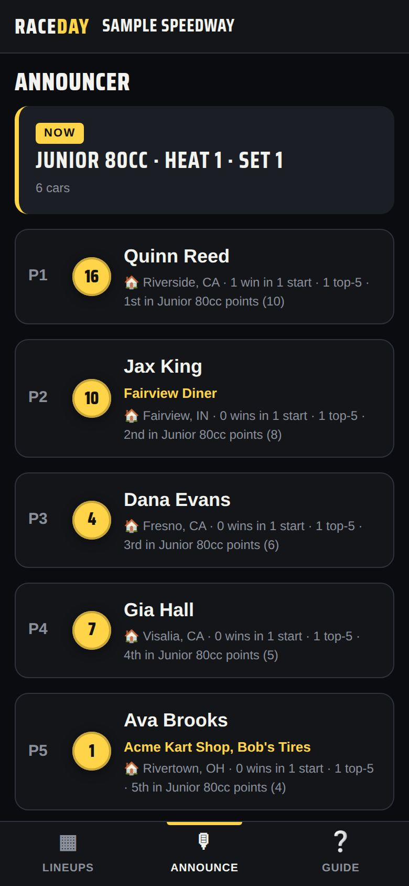

-
Open it
On a staff device, tap 🎙 Announcer on the Lineups tab. For the booth, start sync and send a tablet the Announcer link — it opens straight to the announcer screen and can't change anything.

The Announcer button -
Now
The race on track, in starting order. Each car shows its start spot, number, name, sponsors, hometown, career wins and starts, season points rank, and tonight's heat finishes. It moves to the next race by itself as results are entered.

Announcer screen -
Just finished
Above the current race: the top 3 from the race that just ended.
-
Up next
Tap any Up next race to preview its grid, then ← Back to the race on track.
-
More about a driver
Tap any car for the full driver card.
Good to know
- The running order is every class's first heats, then the second heats, then B-mains, then features.
- Driver details come from the driver book and linked Driven cards — the more drivers fill in, the more there is to say.
Next guides
Still stuck? The Field Manual walks through every screen, and the FAQ covers common questions. Or just text me — it's the fastest way to get an answer.
💬 Text Josh · (260) 207-4983 →or email